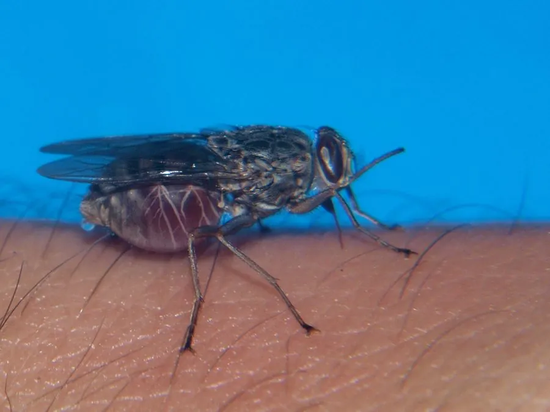

昆虫 · 动物界
舌蝇 Glossina morsitans

吸食脊椎动物血液的褐色蝇类，翅停歇时折叠如剪刀，传播布氏锥虫，是非洲睡眠病与那加那病的媒介。
- 分类
- 门节肢动物门纲昆虫纲目双翅目科舌蝇科属舌蝇属
- 栖息环境
- 撒哈拉以南非洲的稀树草原、河岸林和湖泊沿岸的荫蔽灌丛
- 地理分布
- 撒哈拉以南非洲的稀树草原与河岸林区
- 保护级别
- 无保护问题；为非洲锥虫病的传播媒介，防控靠诱捕与杀虫
物种志
舌蝇的体长约六至九毫米，体色黄褐至深褐，胸部背面有几条深色纵纹，腹部有深浅相间的横带。它最典型的特征是停歇时两翅平叠在背上，像一把收拢的剪刀，刺吸式口器向前伸出，坚硬如针。雌蝇腹部有特殊的腺体，能分泌乳汁喂养幼虫，这在昆虫中十分罕见。
它分布于撒哈拉以南非洲的稀树草原、河岸林和湖泊沿岸，栖息在湿热、荫蔽的灌丛和河谷，白天活动，靠视觉和气味寻找宿主，雌雄都吸血，主要吸食牛、羚羊等动物和人的血液。它是布氏锥虫的传播媒介，锥虫在蝇体内发育后随唾液注入宿主，引起人的非洲睡眠病和牲畜的那加那病，在非洲每年造成大量病例和牲畜损失。舌蝇为卵胎生，幼虫在土中化蛹。防控主要靠诱蝇器、杀虫剂处理和人畜防护，目前尚无有效疫苗。
形态与习性
- 体长约六至九毫米，黄褐至深褐
- 识别停歇时双翅叠于背上，形如收拢的剪刀
- 食性雌雄均吸血，宿主包括牛、羚羊和人
- 传播疾病传播布氏锥虫，引起睡眠病与那加那病
- 繁殖卵胎生，雌蝇分泌乳汁喂养幼虫
- 防控诱蝇器、杀虫剂处理、人畜防护
趣味知识
- 它停歇时两翅叠成一把剪刀，是最好认的姿态。
- 雌蝇会分泌乳汁喂养幼虫，一胎只生一条，却养得很壮。
- 它传播的锥虫让人昏睡、让牛消瘦，是非洲农牧业的大敌。